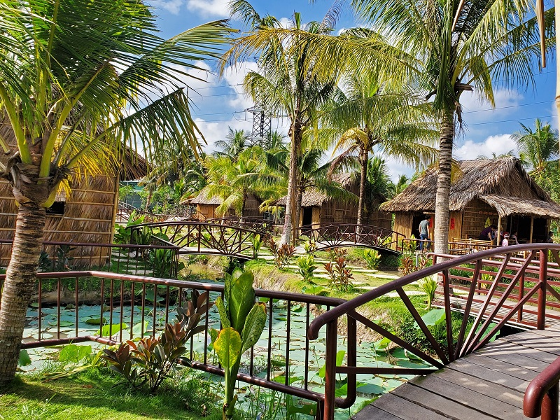
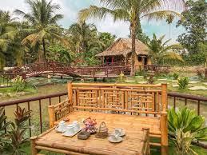
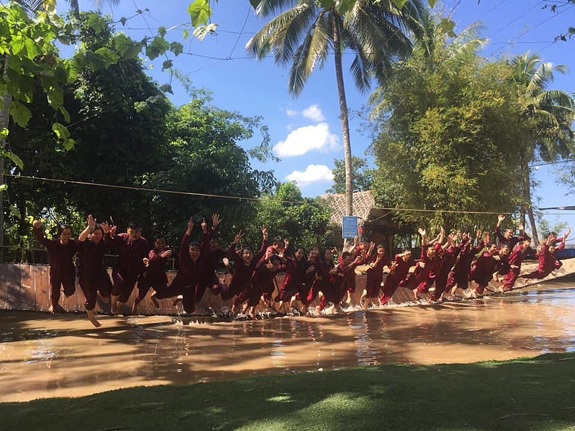
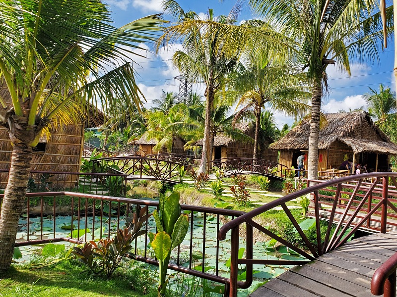
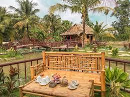
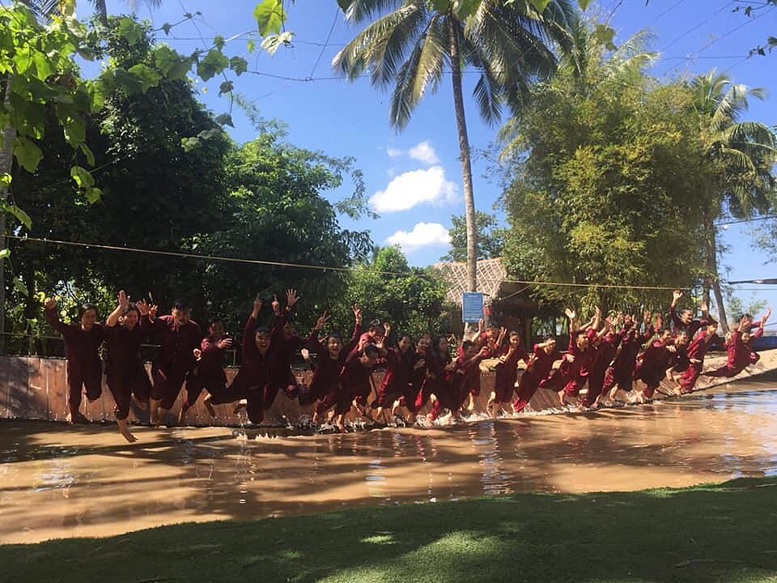

Khu du lịch Làng Bè, Bến Tre nằm gần cầu Rạch Miễu khoảng 100m với khung cảnh sông nước hữu tình miền tây Nam Bộ và gắn liền với nghề nuôi cá bè của dân địa phương sẽ là điểm đến khá thú vị của du khách trong và ngoài nước. Bởi vậy bỏ túi ngay kinh nghiệm đi khu du lịch Làng Bè, Bến Tre 2022 từ A tới Z để có thể có một chuyến đi hoàn hảo nhất.

Đến Làng Bè Bến Tre bạn phải chi trả các chi phí dịch vụ ở đây không bán vé vào cổng, du khách có thể thoải mái chụp ảnh check in, nếu muốn chơi trò chơi thì thuê đồ bà ba 30.000 đ / bộ, còn có gói combo ăn và chơi cho nhóm từ 5 người. Nếu có combo vào các dịp khuyến mãi hoặc đi tầm 5-10 người sẽ có thực đơn ăn trưa và trọn gói trò chơi cho du khách lựa chọn, gọi số HOTLINE 094 979 88 22 để tham khảo trước khi xuất phát.
Làng Bè là một điểm đến không thể bỏ qua với du khách gần xa khi về với Bến Tre vì ngoài khu vui chơi, giải trí thì bạn còn được tham quan quần thể tứ linh: Long – Lân – Quy – Phụng vô cùng hấp dẫn và đặc sắc. Bạn sẽ được tham thú khung cảnh thiên nhiên và tham gia các trò chơi thú vị gồm: Đu Dây đơn, đi cầu lắc, chạy xe qua cầu khỉ, tôm nướng trong trái dừa…

Nằm bên cạnh bờ sông Tiền thơ mộng phía Bến Tre khu du lịch Làng Bè Bến Tre là nơi bạn không nên bỏ qua để tham quan trải nghiệm các trò chơi dân gian trở về tuổi thơ, các món đặc sản miền sông nước khó quên. Trước đây khu du lịch là nhà hàng có tên là Làng Bè sau này nơi đây phát triển thành điểm du lịch Bến Tre cùng các trò chơi dân gian miệt vườn trở về tuổi thơ thu hút được đông đảo các bạn trẻ đặc biệt là học sinh yêu thích.